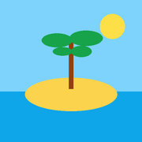

Carnets de révision
Choisis ton outil. Une fois ouvert une première fois, il marche aussi sans internet.

L'Archipel des SavoirsCE2 · lecture, français, monde, calcul, problèmes
Carnet « À l'ouest rien de nouveau »3e · quiz, réflexions, contexte historique
Carnet « Lettres d'une Péruvienne »1re · bac de français
Sur iPhone ou iPad : ouvre ton outil dans Safari, touche le bouton Partager , puis « Sur l'écran d'accueil ». Lance-le ensuite toujours depuis cette icône : ta progression y est mieux conservée.
Version du 15 novembre 2026